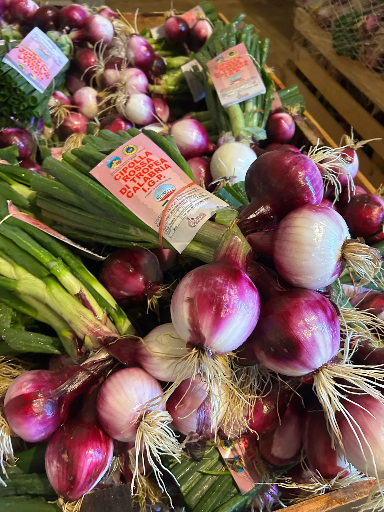
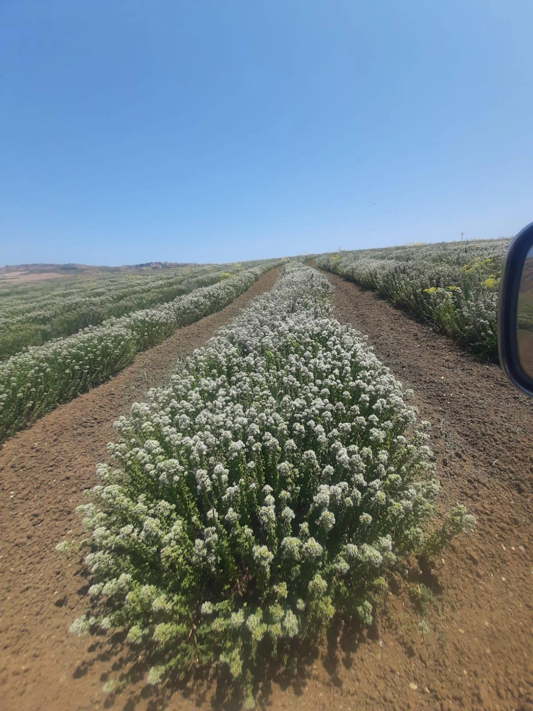
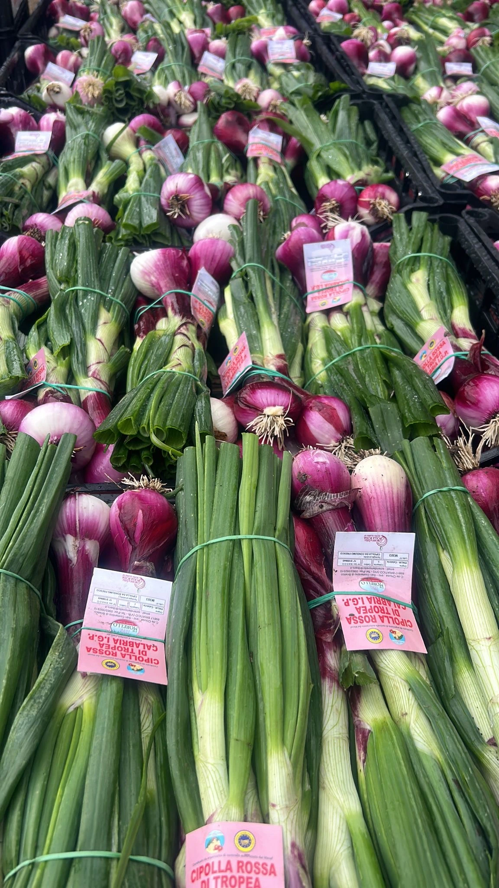
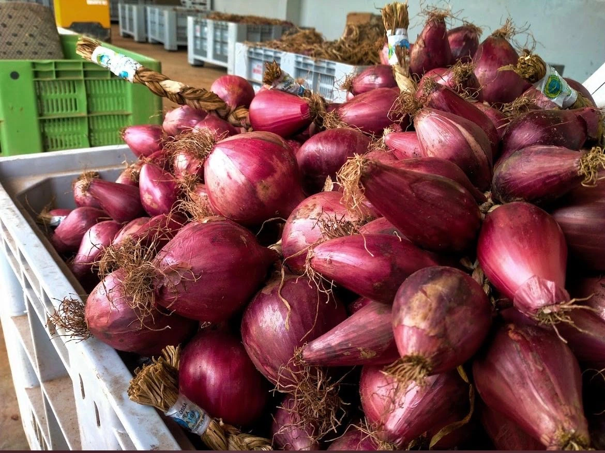

I prodotti
dell'Azienda Morello.
Cipolla Rossa di Tropea Calabria IGP, cipollotto fresco, cipolla essiccata e origano calabrese. Una filosofia sola: qualità che non ha bisogno di spiegazioni.

Cipolla Rossa di
Tropea Calabria
IGP.
Dolce. Croccante. Con quel colore rosso vinaccia che non si finge.
La Cipolla Rossa di Tropea è uno dei sapori più riconoscibili d'Italia — e la nostra è certificata IGP, coltivata nella zona geografica delimitata dal Consorzio di Tutela.
Cosa rende la Cipolla
Rossa di Tropea IGP unica.
01
Dolcezza naturale
Il microclima del Tirreno e le escursioni termiche concentrano gli zuccheri nel bulbo, regalando una dolcezza che non ha bisogno di cottura per esprimersi.
02
Colore intenso
Il rosso vinaccia scuro è un indicatore diretto di qualità e maturazione ottimale. Non è estetica — è chimica. La terra rossa calabrese fa il resto.
03
Croccantezza unica
Il suolo sciolto e ben drenato di San Costantino garantisce una consistenza ferma. La cipolla tiene la forma anche nelle preparazioni crude — in insalata è un'altra cosa.
04
Certificazione IGP
Il marchio Indicazione Geografica Protetta non è decorativo. Significa che ogni fase — dalla coltivazione al confezionamento — segue il disciplinare del Consorzio.
Origano
calabrese.
Quello che senti a tre metri di distanza.
Sulle colline di Briatico cresce un origano che non somiglia a quello in busta del supermercato. Profumo intenso, sapore pieno, essiccazione naturale. Lo stesso che usano le nonne vere.


Cipollotto
fresco.
La cipolla prima che diventi cipolla.
Il cipollotto si raccoglie giovane, quando il bulbo è ancora piccolo e il gambo verde è tenero e profumato. Dolce, croccante, versatile — perfetto crudo in insalata o appena scottato sulla griglia. Lo stesso terreno, la stessa cura, un prodotto completamente diverso.
Cipolla
essiccata.
Tutta la dolcezza, senza scadenza.
La Cipolla Rossa di Tropea essiccata conserva intatto il suo profilo aromatico unico: la dolcezza naturale si concentra, il colore diventa profondo, la shelf-life si allunga senza conservanti. Ideale per uso professionale in cucina, per la grande distribuzione e per chi vuole il sapore di Tropea tutto l'anno.

Le Nostre
Certificazioni.
Trasparenza e qualità certificate da chi di dovere.
GLOBALG.A.P.
Standard internazionale riconosciuto in oltre 135 paesi che certifica le buone pratiche agricole lungo tutta la filiera — dalla semina al confezionamento. Ogni fase del nostro lavoro è verificata da un ente terzo indipendente: tracciabilità, sicurezza, rispetto dell'ambiente.
Rete del Lavoro Agricolo di Qualità
Siamo iscritti al registro nazionale INPS che seleziona le aziende agricole virtuose: quelle che rispettano le norme sul lavoro, la previdenza e la fiscalità. I nostri 30 dipendenti lavorano in modo regolare e tutelato. In un settore dove il lavoro irregolare è ancora troppo diffuso, noi abbiamo scelto la strada giusta — e c'è un ente pubblico che lo certifica.
Consorzio di Tutela IGP
Siamo iscritti all'elenco ufficiale dei confezionatori autorizzati dal Consorzio di Tutela della Cipolla Rossa di Tropea Calabria IGP. La certificazione IGP garantisce origine, territorio e rispetto del disciplinare di produzione.
Quello che ci chiedono
più spesso.
Cos'è la Cipolla Rossa di Tropea Calabria IGP?
La Cipolla Rossa di Tropea Calabria IGP è un ortaggio a Indicazione Geografica Protetta coltivato nella fascia costiera tirrenica calabrese. Il marchio IGP garantisce che la cipolla è stata prodotta e confezionata nella zona geografica delimitata dal Consorzio di Tutela, seguendo un preciso disciplinare di produzione. Si distingue per il colore rosso intenso, il sapore dolce e la consistenza croccante.
Spedite in tutta Italia?
Sì, spediamo in tutta Italia e in Europa. Per informazioni su prezzi, grammature e tempi di spedizione, contattaci direttamente.
Come si distingue una cipolla IGP da una comune?
Tre elementi la distinguono: il colore rosso vinaccia intenso e uniforme, il sapore dolce con assenza di piccantezza eccessiva, e l'etichetta IGP sul confezionamento che certifica l'autenticità. Le cipolle vendute come "di Tropea" senza marchio IGP non offrono le stesse garanzie di origine e qualità.
Posso ordinare sia per uso privato che per la rivendita?
Assolutamente sì. Lavoriamo sia con clienti privati che con ristoranti, enoteche, mercati e rivenditori. Per ordini commerciali o richieste all'ingrosso, contattaci direttamente — troveremo la soluzione giusta.
Vuoi saperne
di più?
Contattaci per maggiori informazioni sui nostri prodotti, sulla certificazione IGP e su come lavoriamo. Siamo sempre disponibili.